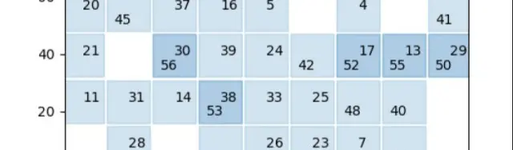
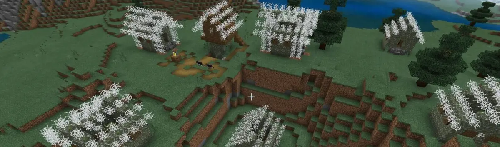
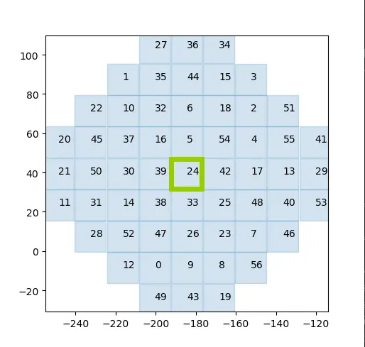
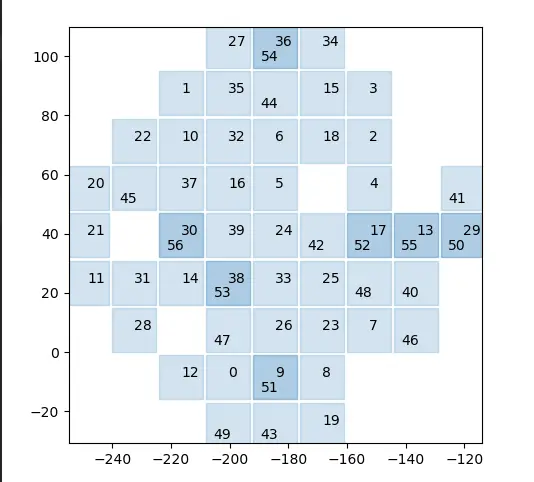
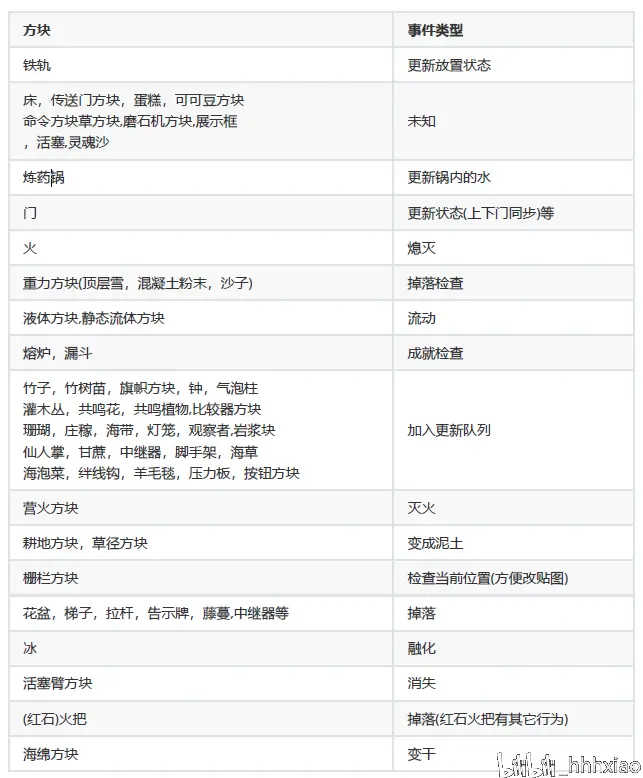
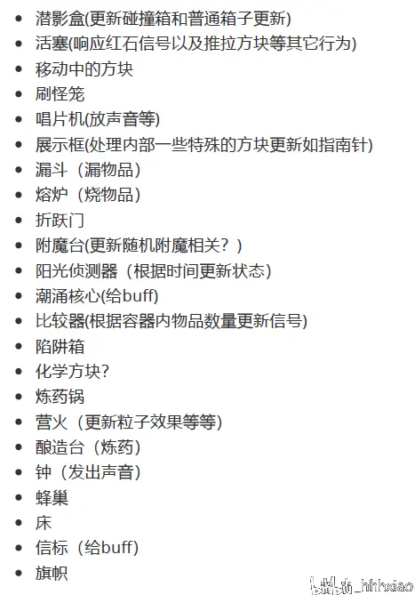

先打广告：

一份比较详细的MCBE村庄机制解析 站内专栏 »摸完村庄机制，这次填一下方块更新的坑
前排提示:
下面是正文:
世界(存档)每隔特定的时间就会更新一次数据，这更时间叫做游戏刻(gametick),也就是常说的gt。反映到游戏上就是你能看到游戏内植物的生长，红石的运作，生物的移动等等。这篇文章会聚焦在方块相关的数据更新上(所以不会包括spawn和despawn行为)。
区块之间的更新
世界的更新是以区块为单位的，当模拟距离为4 的时候每gt 有57 个区块发生了更新(57个是绝大多数情况下)，更新的区块围绕在玩家周围，下图是某个gt内的区块更新：

发生更新的范围
玩家位于中心区块中，数字大小展示了这一gt 区块更新的顺序.很不幸的是这个区块间更新的顺序没有什么很好的规律，mojang的预期行为是每20gt就把这个顺序随机打乱一次，也就是说每过20gt这个区块间的更新顺序会变化一次。
但是根据我的实测，这个变化周期不是恒定的20gt,而是在17-20gt之间反复横跳，但是这还不是最要命的，最要命的是每次更新顺序变化的时候都会有一次不均匀的区块更新，也就是在那个游戏刻某些区块会获得两次更新，而某些区块不会得到更新.
下面是一个这样的例子:

一次不均匀的更新，这样的gt每过20gt左右会发生一次
区块内的更新
区块内的更新的产生往大了讲主要有两个类别，一种触发性的(比如玩家在某一时刻破坏一个方块而更新它周围的六个方块)，一种周期性的(比如在特定条件下每gt 都会尝试让水结冰)。
触发性的更新
触发性更新目前唯一已知的来源是周围方块的更新导致当前方块进行的更新。这时候会(检测玩家操作和区块更新行为的次序未知，有兴趣的可以合理猜测)调用该方块的neighborChanged 函数(所以简称NC更新？)。比如你挖掉了一个插了火把的木板的时候，木板周围的六个方块会立即调用它们的neighborChanged函数，而附着于它的火把方块也会因为调用了neighborChanged 函数而立即做掉落检查(在其NC函数内部调用了_checkDoPop() ).
根据测试，以下是已知的能产生NC更新的事件
而调用周围6个方块的更新的顺序为:
知道了更新源头就要知道接收到更新后会做什么。下面是常见的响应NC更新的方块以及可能发生的事件：

响应更新行为
可以注意到有些方块在受到neighborChanged更新的时候有可能把实际更新行为加入到队列，这里的队列指的是一个缓冲区，上面的方块受到NC更新后并不会马上更新自己的状态，而是把相关信息放到队列中，稍后再更新。
更新队列
更新队列(BlockTickingQueue)是一个优先队列,也就是一个更新项( BlockTick )的列表，会暂存还没有实际更新的更新项目，这样的队列每个区块都有一个。
更新项
每个更新项有下面几个字段：
更新项的数据为后面的实际更新行为提供了数据
更新队列的消耗
随着游戏的进行，队列里面的更新项目会越来越多(因为更新一直在产生)，但是这个队列里面的更新项也在不断地被消耗,
下面是消耗的过程:
这个过程每gt每个区块会执行两次
当退出游戏的时候每个区块的更新队列会被完整地写入到存档文件(你可以用mcctool[http://mcctoolchest.com/]在存档的区块数据文件内看到这个更新队列的信息，包括所有更新项的具体数据)，加载世界的时候这些数据也会被完整读取出来.
不难发现,当更新的速度大于消耗的速度的时候,更新队列越来越长越来越长越来越长的情况,轻则出现更新延迟,当然这个特性已经被云龙大叔发现了:
[MCBE]养鸽有术，脱贫致富 B 站视频 »重则导致崩档。
更新顺序
bb这么久终于到达更新顺序问题了，以下描述的是每个区块一个gt 内依次发生的事情(忽略Spawn 和despawn ):
上面说了更新队列，下面介绍随机刻更新(tickBlocks) ,方块实体更新(tickBlockEntities)和红石
更新( tickRedstoneBlocks )
随机刻更新
这个事件里面的更新都是基于概率的，因此才有"随机"二字，其内部会依次发生如下事情：
方块实体更新
每个区块都维护了一个方块实体( BlockActor )列表,每gt 这个列表都会被有意地完全随机地打乱一次,打乱后遍历这个列表，对列表内的每个方块实体执行tick() 函数,括号内是猜测的行为(不能保证100%准确,仅供参考)

方块实体更新行为
其中玩家最为熟悉的大概就是活塞的随机推出顺序了吧，这也是一些活塞互推随机数生成器的原理。
红石更新
红石组件以及继承树
下面这个继承树主要来自于国外玩家earthcomputer和Floan的一篇文档，链接见开头：
各种红石组件有一个相同的父类(理解成都是同一个爸生出来的，有不同点也有相同点)，下面是继承树(理解成父子关系)，括号内是翻译，中文仅供参考
这里“生产和消费”的猜测是红石信号，生产者产生红石信号，消费者会感应红石信号(仅限猜测)，红石火把闪一段时间后会熄灭就是这个Redstone Torch Capacitors的锅。
更新行为
每个维度有个电路系统( Circuit System ),而这个系统会维护一个红石组件(Component)的哈希表:每当一个红石组件被放置的时候这个列表就会记录下这个原件的信息以及位置，当然原件也会在合适的时候被移除(比如被玩家破坏)。
每个区块都会获取这个存着所有原件的哈希表,然后对位于该区块内的红石原件执行一次它们对应的onRedstoneUpdate 函数。几乎所有方块都有onRedstoneUpdate 函数,只不过绝大部分的方块这个函数什么都不做的,下面这些特定方块才会有具体的事件(更新行为不保证100%准确):
响应红石更新
总结与展望